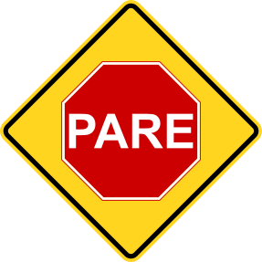
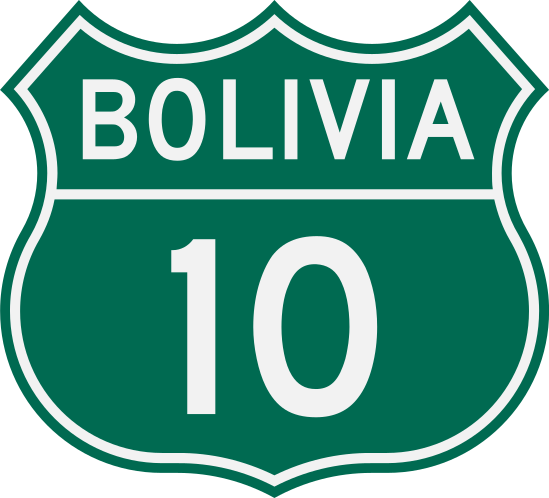
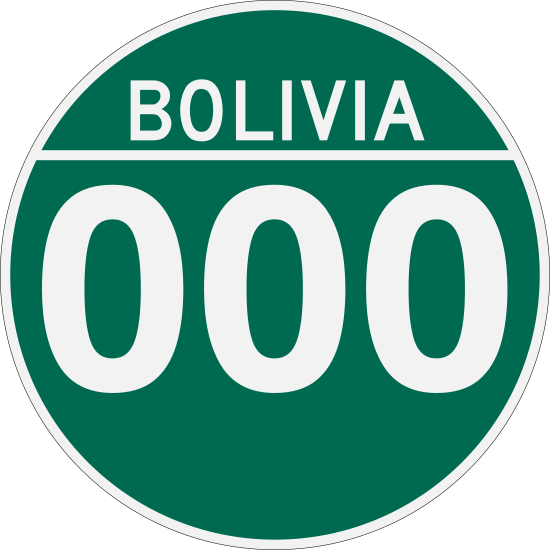
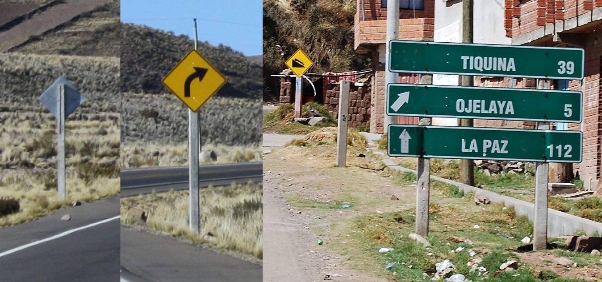
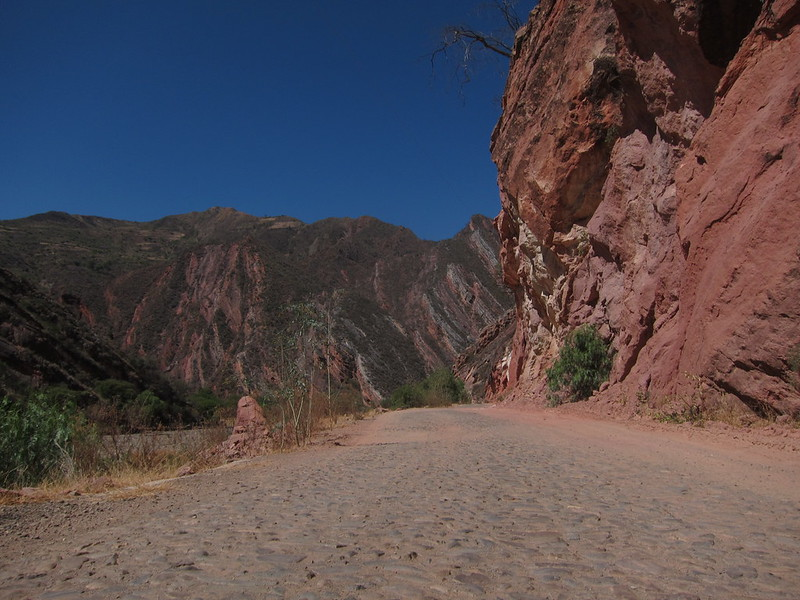
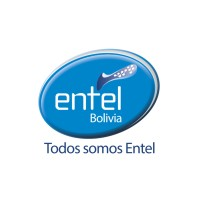
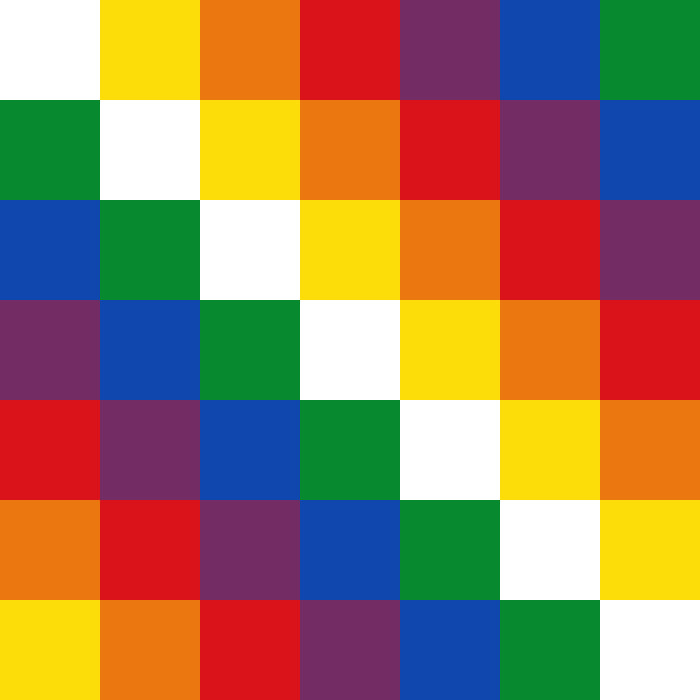
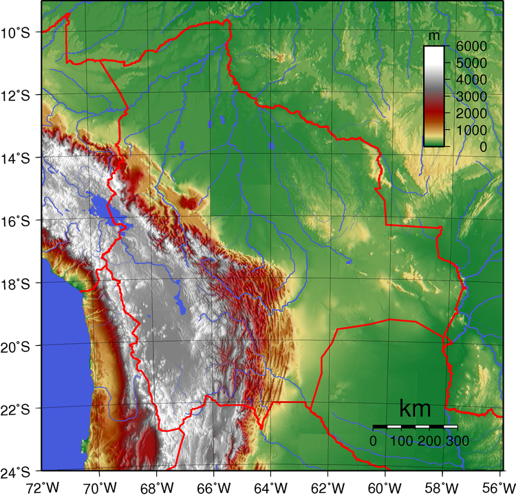
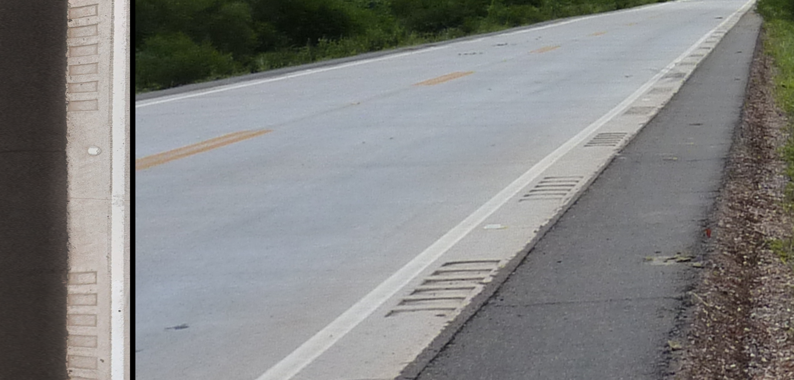

国・地域の見分け方
- ドメインは.bo
- 標識を立てる棒が四角い製材のようなぱっと見でよくわからない素材でできている
- ボリビアは木造住宅がほとんどなくレンガとセメントでできている
- ほとんどの車はナンバープレートがうっすらと青色に見える
- ウィファラと呼ばれるカラフルな旗がある
見つかる標識







By EEJCC - Own work, CC BY-SA 4.0, Wikimedia Commons(Link)

ボリビアの社会主義政党の旗のカラーリング（黒・白・青や白・青）が街中で見つかることがあり、政党名を省略したMAS IPSPという文字列も見受けられる(参考文献 Movimiento al Socialismo)。ボリビア国営の通信会社entelの建物も道端でよく見かける。ともに似た色なので青・白のペイントがされた建物を見たらボリビアを考えてみる。

ウィファラの旗やロゴがある(参考文献 ウィファラ - Wikimedia)。

Yacimientos Petrolíferos Fiscales Bolivianos (YPFB) は資源の探索と生産をするボリビア最大級の企業(参考文献 YPFB)。よく見るとたまにひし形のロゴが見つかる。
{{< amazoncard url=“https://amzn.to/4oHiync” title=“ボリビアを知るための65章【第3版】 (エリア・スタディーズ)” price=“¥2,200” tagline=“アンデスの山々やウユニ塩湖、アマゾンといった多様で豊かな自然を抱える国、ボリビア。この国の複雑な地形と自然は多様な文化をも生み出した。2006年のエボ・モラレス政権以降、民族の多様性に光が当てられ、2009年に国名を「ボリビア多民族国」と変更した。”
}}
州・地域の絞り込み
- 西ほど標高が高く、東は平地が広がっている
- 標高が低い場所は家の壁にセメントで色を付ける文化があるらしい（出典）
- 標高が高いほどシンプルなレンガ造りが多い
- 木が無くて周りが山で家がまばらだとチチカカ湖付近かも(by Geotips )

- RN3はかなり険しい山の間を通る
- RN4道路（サンタ・クルス周辺）の東側の道路は舗装が特徴的
- RN7はRN4と同じく緑が多いが山がちなエリア
- RN9は緑が多く道路が南北方向に伸びている

By Dr. Vladimir Iván - Own work, CC BY-SA 3.0, Link

By Jim McIntosh - Flickr: On the Road from Puerto Suarez to SCZ, CC BY 2.0, Link, 加工あり
.jpg#/media/File:Florida,_Bolivia_-_panoramio_-_vozachudo2004_(10).jpg)
By vozachudo2004, CC BY-SA 3.0, Link

By Grullab - Own work, CC BY-SA 4.0, Link
都市・町の絞り込み
- ラパス
- すり鉢状の地形であり断崖が見えることも
- 電柱にグレーの服を来た人形が吊られていることがあるがこれは泥棒に対するメッセージらしい(参考文献 『ボリビア・アイマラ族の「泥棒を殺す習慣」、違法とならない理由』)
- スクレの特定地域のみ条例によって壁を白くすることが義務付けられている
_(17202714556).jpg#/media/File:BO_Sucre_1207_(19)_(17202714556).jpg)
- サハマ国立公園ではサハマ山が見えてなおかつGoogle Carが見える
- インカ帝国の発祥の地と言われる太陽の島がある(参考文献 太陽の島)
- 列車の墓場を徒歩で歩いている(参考文献 Cementerio de trenes)
- Ojos del Salarという塩原の中にストリートビューがある